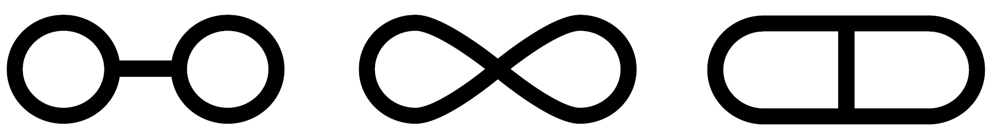

Two Criteria for Homotopy Equivalence#
Earlier in this chapter the main tool we used for constructing homotopy equivalences was the fact that a mapping cylinder deformation retracts onto its ‘target’ end. By repeated application of this fact one can often produce homotopy equivalences between rather different-looking spaces. However, this process can be a bit cumbersome in practice, so it is useful to have other techniques available as well. We will describe two commonly used methods here. The first involves collapsing certain subspaces to points, and the second involves varying the way in whicn the parts of a space are put together.
Collapsing Subspaces#
The operation of collapsing a subspace to a point usually has a drastic effect on homotopy type, but one might hope that if the subspace being collapsed already has the homotopy type of a point, then collapsing it to a point might not change the homotopy type of the whole space. Here is a positive result in this direction:
If \((X,A)\) is a CW pair consisting of a CW complex \(X\) and a contractible subcomplex \(A\), then the quotient map \(X \rightarrow X/A\) is a homotopy equivalence.
A proof will be given later in Proposition 0.17, but for now let us look at some examples showing how this result can be applied.
Example 0.7: Graphs. The three graphs  are homotopy equivalent since each is a deformation retract of a disk with two holes, but we can also deduce this from the collapsing criterion above since collapsing the middle edge of the first and third graphs produces the second graph.
{kind=link}
More generally, suppose \(X\) is any graph with finitely many vertices and edges. If the two endpoints of any edge of \(X\) are distinct, we can collapse this edge to a point, producing a homotopy equivalent graph with one fewer edge. This simplification can be repeated until all edges of \(X\) are loops, and then each component of \(X\) is either an isolated verte or a wedge sum of circles.
This raises the question of whether two such graphs, having only one vertex in each component, can be homotopy equivalent if they are not in fact just isomorphic graphs. Exercise 12 at the end of the chapter reduces the question to the case of connected graphs. Then the task is to prove that a wedge sum \(\bigvee_m S^1\) of \(m\) circles is not homotopy equivalent to \(\bigvee_n S^1\) if \(m \neq n\). This sort of thing is hard to do directly. What one would like is some sort of algebraic object associated to spaces, depending only ontheir homotopy type, and taking different values for \(\bigvee_m S^1\) has Euler characteristic \(1-m\). But it is a rather nontrivial theorem that the Euler characteristic of a space depends only on its homotopy type. A different algebraic invariant that works equally well for graphs, and whose rigorous development requires less effort than the Euler characteristic, is the fundamental group of a space, the subject of Chapter 1.
Example 0.8. Consider the space \(X\) obtained from \(S^2\) by attaching the two ends of an arc \(A\) to two distinct points on the sphere, say the north and south poles.
{kind=link}
Let \(B\) be an arc in \(S^2\) joining the two points where \(A\) attaches. Then \(X\) can be given CW complex structure with the two endpoints of \(A\) and \(B\) as \(0\)-cells, the interiors of \(A\) and \(B\) as \(1\)-cells, and the rest of \(S^2\) as a \(2\)-cell. Since \(A\) and \(B\) are contractible, \(X/A\) and \(X/B\) are homotopy equivalent to \(X\). The space \(X/A\) is the quotient \(S^2/S^0\), the sphere with two potins identified, and \(X/B\) is \(S^1 \vee S^2\). Hence \(S^2 / S^0\) and \(S^1 \vee S^2\) are homotopy equivalent, a fact which may not be entirely obvious at first glance.
Example 0.9. Let \(X\) be the union of a torus with \(n\) meridional disks. To obtain a CW structure on \(X\), choose a longitudinal circle in the torus, intersecting each of the meriodional disks in one point. These intersection points are then the \(0\)-cells, the \(1\)-cells are the rest of the longitudinal circle and the boundary circles of the meridional disks, and the \(2\)-cells are the remaining regions of the torus and the interiors of the meridional disks. Collapsing each meridional disk to a point yields a homotopy equivalent space \(Y\) consisting of \(n\) \(2\)-spheres, each tangent to its two neighbors, a ‘necklace with \(n\) beads’.
{kind=link}
The third space \(Z\) in the figure, a strand of \(n\) beads with a string joining its two ends, collapses to \(Y\) by collapsing the string to a point, so this collapse is a homotopy equivalence. Finally, by collapsing the arc in \(Z\) formed by the front halves of the equators of the \(n\) beads, we obtain the fourth spae \(W\), a wedge sum of \(S^1\) with \(n\) \(2\)-spheres. (One can see why a wedge sum is sometimes a called a ‘bouquet’ in the older literature.)
Example 0.10: Reduced Suspension. Let \(X\) be a CW complex and \(x_0 \in X\) a \(0\)-cell. Inside the suspension \(SX\) we have the line segment \(\{x_0\} \times I\), and collapsing this to a point yields a space \(\sum X\) homotopy equivalent to \(SX\), called the reduced suspension of \(X\). For example, if we take \(X\) to be \(S^1 \vee S^1\) with \(x_0\) the intersection point of the two circles, then the ordinary suspension \(SX\) is the union of two spheres intersecting along the arc \(\{x_0\} \times I\), so the reduced suspension \(\sum X\) is \(S^2 \vee S^2\), a slightly simpler space. More generally we have \(\sum(X \vee Y) = \sum X \vee \sum Y\) for arbitrary CW complexes \(X\) and \(Y\). Another way in which the reduced suspension \(\sum X\) is slightly simpler than \(SX\) is in its CW structure. In \(SX\) there are two \(0\)-cells (the two suspension points) and an \((n+1)\)-cell \(e^n \times (0,1)\) for each \(n\)-cell of \(X\) other than the \(0\)-cell \(x_0\).
The reduced suspension \(\sum X\) is actually the same as the smash product \(X \wedge S^1\) since both spaces are the quotinet of \(X \times I\) with \(X \times \partial I \cup \{x_0\}\times I\) collapsed to a point.
Attaching Spaces#
Another common way to change a space without changing its homotopy type involves the idea of continuously varying how its parts are attached together. A general definition of ‘attaching one space to another’ that includes the case of attaching cells is the following. We start with a space \(X_0\) and another space \(X_1\) that we wish to attach to \(X_0\) by identifying the points in a subspace \(A \subset X_1\) with points of \(X_0\). The data needed to do this is a map \(f: A \rightarrow X_0\), for then we can form a quotient space of \(X_0 \sqcup x_1\) by identifying each point \(a \in A\) with its image \(f(a) \in X_0\). Let us denote this quotient space by \(X_0 \cup_f X_1\), the space \(X_0\) with \(X_1\) attached along \(\mathbf{A}\) via \(\mathbf{f}\). When \((X_1, A)=(D^n, S^{n-1})\) we have the case of attaching an \(n\)-cell to \(X_0\) via a map \(f:S^{n-1} \rightarrow X_0\).
Maping cylinders are examples of this construction, since the mapping cylinder \(M_f\) of a map \(f:X \rightarrow Y\) is the space obtained from \(Y\) by attaching \(X \times I\) along \(X \times \{1\}\) via \(f\).
{kind=link}
Closely related to the mapping cylinder \(M_f\) is the mapping cone \(C_f = y \sqcup_f CX\) where \(CX\) is the cone \((X \times I) / (X \times \{0\})\) and we attach this to \(Y\) along \(X \times \{1\}\) via the identifications \((x,1) \sim f(x)\). For example, when \(X\) is a sphere \(S^{n-1}\) the mapping cone \(C_f\) is the space obtained from \(Y\) by attaching an \(n\)-cell via \(f:S^{n-1} \rightarrow Y\). A mapping cone \(C_f\) can also be viewed as the quotient \(M_f/X\) of the mapping cylinder \(M_f\) with the subspace \(X=X\times \{0\}\) collapsed to a point.
If one varies an attaching map \(f\) by a homotopy \(f_t\), one gets a family of spaces whose shape is undergoing a continuous change, it would seem, and one might expect these spaces all to have the same homotopy type. This is often the case:
If \((X_1, A)\) is a CW pair and the two attaching maps \(f,g:A \rightarrow X_0\) are homotopic, then \(X_0 \sqcup_f X_1 \simeq X_0 \sqcup_g X_1\).
Again let us defer the proof and look at some examples.
{kind=link}
Example 0.11. Let us rederive the result in Example 0.8 that a sphere with two points identified is homotopy equivalent to \(S^1 \vee S^2\). The sphere with two points identified can be obtained by attaching \(S^2\) to \(S^1\) by a map that wraps a closed arc \(A\) in \(S^2\) around \(S^1\), as shown in the figure. Since \(A\) is contractible, this attaching map is homotopic to a constant map of \(A\) yields \(S^1 \vee S^2\). The result then follows since \((S^2, A)\) is a CW pair, \(S^2\) being obtained from \(A\) by attaching a \(2\)-cell.
Example 0.12. In similar fashion we can see that the necklace in Example 0.9 is homotopy equivalent to the wedge sum of a circle with \(n\) \(2\)-spheres. The necklace can be obtained from a circle by attaching \(n\) \(2\)-spheres along arcs, so the necklace is homotopy equivalent to the space obtained by attaching \(n\) \(2\)-spheres to a circle at points. Then we can slide these attaching points around the circle until they all coincide, producing the wedge sum.
Example 0.13. Here is an application of the earlier fact that collapsing a contractible subcomplex is a homotopy equivalence: If \((X,A)\) is a CW pair, consisting of a cell complex \(X\) and a subcomplex \(A\), then \(X/A \simeq X \cup CA\), the mapping cone of the inclusion \(A \hookrightarrow X\). For we have \(X/A=(X\cup CA)/CA \simeq X \cup CA\) since \(CA\) is a contractible subcomplex of \(X \cup CA\).
Example 0.14. If \((X,A)\) is a CW pair and \(A\) is contractible in \(X\), that is, the inclusion \(A \hookrightarrow X\) is homotopic to a constant map, then \(X/A \simeq X \vee SA\). Namely, by the previous example we have \(X/A \simeq X \cup CA\), and then since \(A\) is contractible in \(X\), the mapping cone \(X \cup CA\) of the inclusion \(A \hookrightarrow X\) is homotopy equivalent to the mapping cone of a constant map, which is \(X \vee SA\). For example, \(S^n / S^i \simeq S^n \vee S^{i+1}\) for \(i < n\), since \(S^i\) is contractible in \(S^n\) if \(i < n\). In particular this gives \(S^2/S^0 \simeq S^2 \vee S^1\), which is Example 0.8 again.